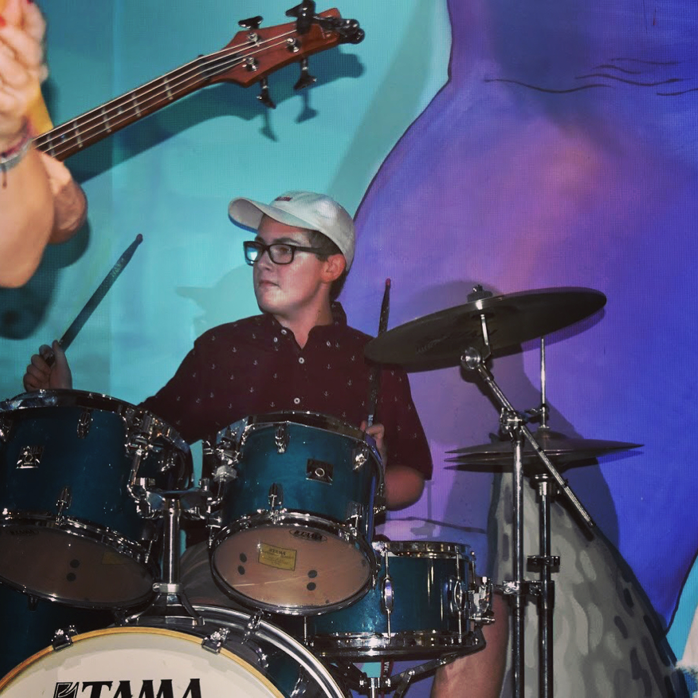
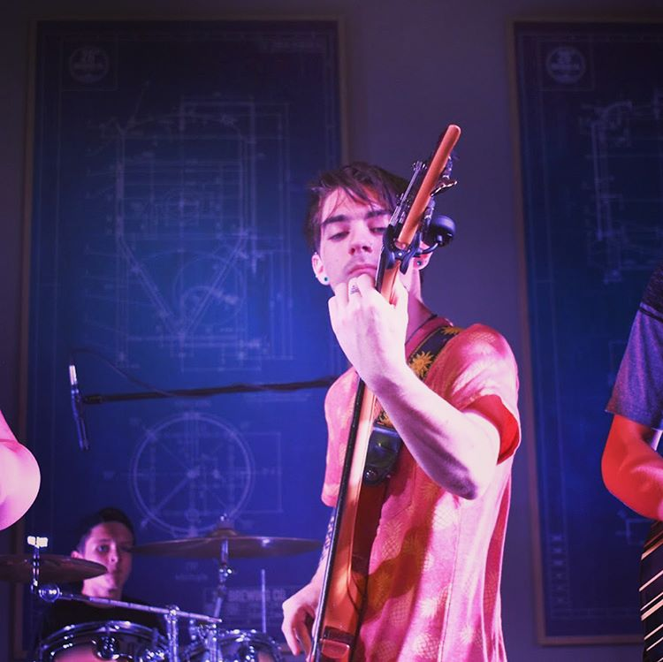
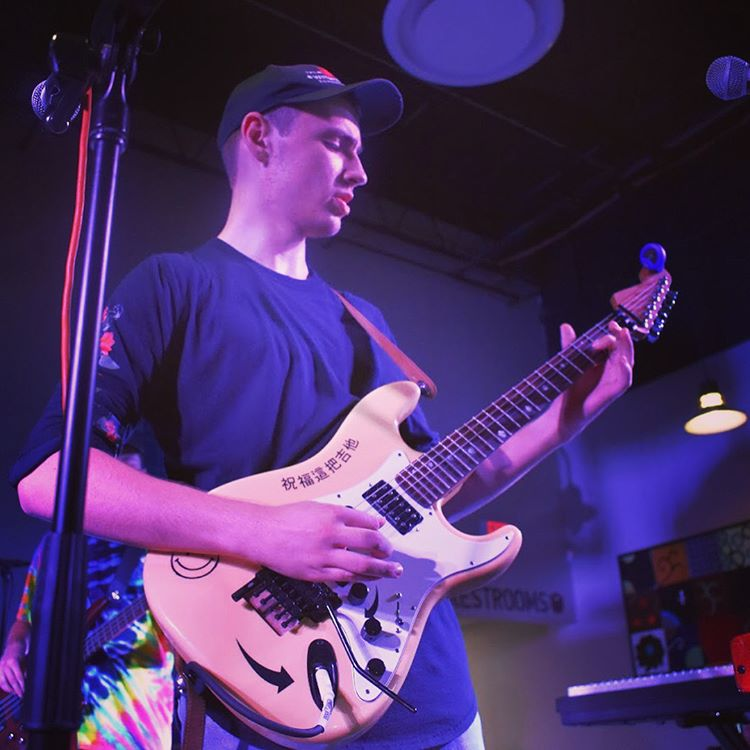
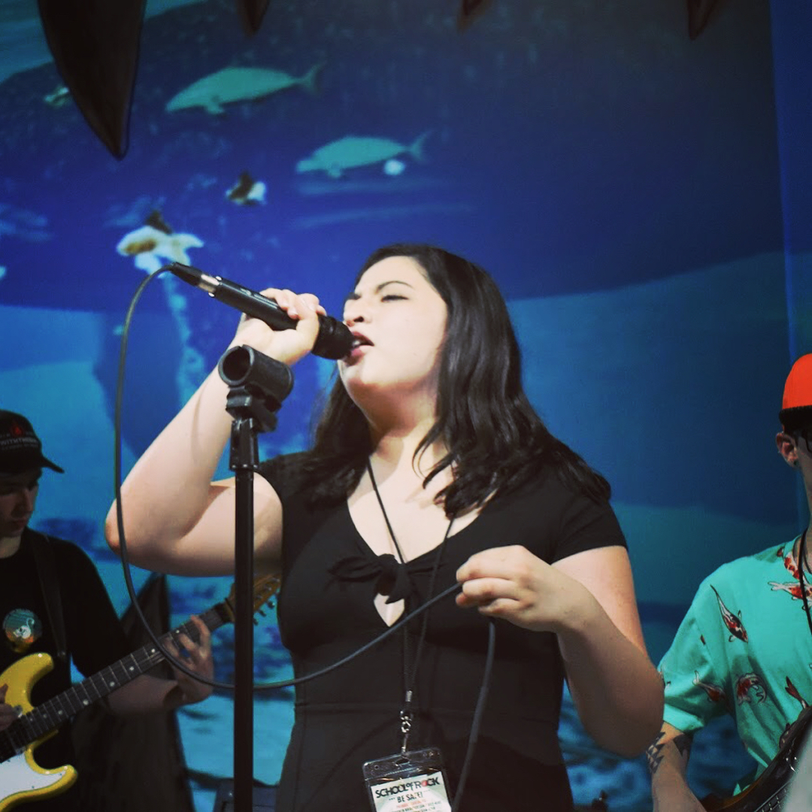
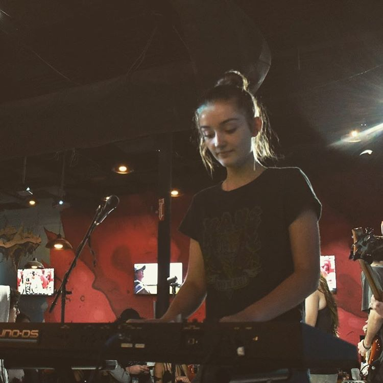

Biography
A Montreal-born Grenadian-Canadian, Kaia Kater grew up between two worlds: one her family’s deep ties to folk music; the other the years she spent soaking up Appalachian music in West Virginia. Her old-time banjo-picking skills, deft arrangements, and songwriting abilities have landed her in the spotlight in North America and the UK, garnering critical acclaim from outlets such as NPR, CBC Radio, Rolling Stone, BBC Music, and No Depression Kaia started her career early, crafting her first EP Old Soul (2013) when she was just out of high school. Since then, she’s gone on to release two more albums, Sorrow Bound (2015) and Nine Pin (2016). Her most recent album weaves between hard-hitting songs that touch on social issues like the Black Lives Matter movement (“Rising Down,” “Paradise Fell”) and more personal narratives speaking to life and love in the digital age (“Saint Elizabeth”). Nine Pin won a Canadian Folk Music Award, a Stingray Rising Star Award and sent Kaia on an 18-month touring journey from Ireland to Iowa, including stops at The Kennedy Center, Hillside Festival and London's O2 Shepherd's Bush. For her third album, Grenades (October 2018, Folkways/acronym Records), she took a decidedly different direction, choosing to lean into a wider array of sounds and styles, in order to convey a wider array of emotions and topics, most notably her paternal ancestry.

Andrew Jagos
Drummer

Riley Kane
Bassist

Colby Brookshire
Guitarist

Sarah Suarez
Singer
